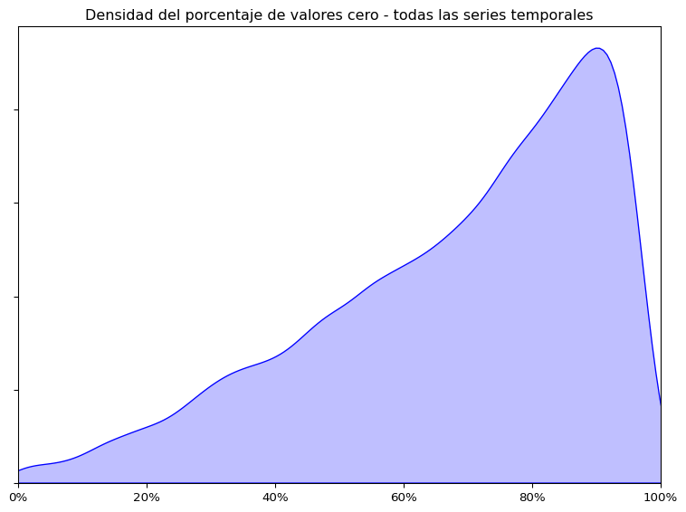

Código
import pandas as pd
import numpy as np
import plotly.express as px
import seaborn as sns
import matplotlib.pyplot as pltEl presente análisis exploratorio de datos (EDA) tiene como objetivo comprender la estructura, la calidad y las principales características de los datos históricos de ventas de Walmart. Se busca describir cómo están organizados los datos, su naturaleza jerárquica, e identificar patrones, valores atípicos y posibles inconsistencias que puedan afectar su análisis.
El conjunto de datos está compuesto por 42,840 series temporales jerárquicas, correspondientes a registros de ventas a lo largo del tiempo organizados en distintos niveles. Los datos provienen de tres estados de Estados Unidos: California (CA), Texas (TX) y Wisconsin (WI). La naturaleza jerárquica de los datos permite su agregación a diferentes niveles, como producto, departamento, categoría o estado. El período cubierto por las ventas abarca desde enero de 2011 hasta junio de 2016, e incluye también información sobre precios, promociones y días festivos. Cabe señalar que un alto porcentaje de las series presenta periodos con valores de ventas iguales a cero.
En total, el conjunto de datos incluye 3,049 productos individuales, distribuidos en 3 categorías, 7 departamentos y vendidos en 10 tiendas ubicadas en los tres estados mencionados. La organización jerárquica permite generar distintas agregaciones, por ejemplo, una única serie con todas las ventas, tres series agregadas por estado, o series más específicas por combinación de producto y tienda. En su nivel más desagregado, las ventas de los 3,049 productos en las 10 tiendas conforman 30,490 series temporales individuales.
Los datos se presentan en tres archivos separados:
sales_train.csv: Son los datos principales. Contienen una columna para cada uno de los 1941 días desde el 29/01/2011 hasta el 22/05/2016; sin incluir el período de validación de 28 días hasta el 19/06/2016. También incluye los ID de artículo, departamento, categoría, tienda y estado.
calendar.csv: Contiene las fechas en las que se venden los productos junto con características relacionadas como día de la semana, mes, año y 3 indicadores binarios que indican si las tiendas en cada estado permitían compras con cupones de alimentos SNAP en esta fecha (1) o no (0).
sell_prices.csv: Contiene información sobre los productos vendidos (ID de tienda, artículo, fecha y precio de venta).
Carga de módulos para la manipulación de datos y visualización interactiva.
import pandas as pd
import numpy as np
import plotly.express as px
import seaborn as sns
import matplotlib.pyplot as pltCarga de los datos utilizando pandas. Los archivos originales en formato .csv han sido previamente convertidos a .parquet para optimizar el uso de memoria y espacio en disco, mejorando la eficiencia en el manejo de grandes volúmenes de datos.
calendar = pd.read_parquet('data/calendar.parquet')
train = pd.read_parquet('data/sales_train.parquet')
prices = pd.read_parquet('data/sell_prices.parquet')
sample_submit = pd.read_parquet('data/sample_submission.parquet')Como primer paso, es recomendable echar un vistazo rápido a los conjuntos de datos.
Aquí están las primeras 10 filas de los datos de ventas:
train.head(10)| id | item_id | dept_id | cat_id | store_id | state_id | d_1 | d_2 | d_3 | d_4 | ... | d_1904 | d_1905 | d_1906 | d_1907 | d_1908 | d_1909 | d_1910 | d_1911 | d_1912 | d_1913 | |
|---|---|---|---|---|---|---|---|---|---|---|---|---|---|---|---|---|---|---|---|---|---|
| 0 | HOBBIES_1_001_CA_1_validation | HOBBIES_1_001 | HOBBIES_1 | HOBBIES | CA_1 | CA | 0 | 0 | 0 | 0 | ... | 1 | 3 | 0 | 1 | 1 | 1 | 3 | 0 | 1 | 1 |
| 1 | HOBBIES_1_002_CA_1_validation | HOBBIES_1_002 | HOBBIES_1 | HOBBIES | CA_1 | CA | 0 | 0 | 0 | 0 | ... | 0 | 0 | 0 | 0 | 0 | 1 | 0 | 0 | 0 | 0 |
| 2 | HOBBIES_1_003_CA_1_validation | HOBBIES_1_003 | HOBBIES_1 | HOBBIES | CA_1 | CA | 0 | 0 | 0 | 0 | ... | 2 | 1 | 2 | 1 | 1 | 1 | 0 | 1 | 1 | 1 |
| 3 | HOBBIES_1_004_CA_1_validation | HOBBIES_1_004 | HOBBIES_1 | HOBBIES | CA_1 | CA | 0 | 0 | 0 | 0 | ... | 1 | 0 | 5 | 4 | 1 | 0 | 1 | 3 | 7 | 2 |
| 4 | HOBBIES_1_005_CA_1_validation | HOBBIES_1_005 | HOBBIES_1 | HOBBIES | CA_1 | CA | 0 | 0 | 0 | 0 | ... | 2 | 1 | 1 | 0 | 1 | 1 | 2 | 2 | 2 | 4 |
| 5 | HOBBIES_1_006_CA_1_validation | HOBBIES_1_006 | HOBBIES_1 | HOBBIES | CA_1 | CA | 0 | 0 | 0 | 0 | ... | 0 | 1 | 0 | 1 | 0 | 0 | 0 | 2 | 0 | 0 |
| 6 | HOBBIES_1_007_CA_1_validation | HOBBIES_1_007 | HOBBIES_1 | HOBBIES | CA_1 | CA | 0 | 0 | 0 | 0 | ... | 0 | 0 | 0 | 1 | 0 | 1 | 0 | 0 | 1 | 1 |
| 7 | HOBBIES_1_008_CA_1_validation | HOBBIES_1_008 | HOBBIES_1 | HOBBIES | CA_1 | CA | 12 | 15 | 0 | 0 | ... | 0 | 0 | 1 | 37 | 3 | 4 | 6 | 3 | 2 | 1 |
| 8 | HOBBIES_1_009_CA_1_validation | HOBBIES_1_009 | HOBBIES_1 | HOBBIES | CA_1 | CA | 2 | 0 | 7 | 3 | ... | 0 | 0 | 1 | 1 | 6 | 0 | 0 | 0 | 0 | 0 |
| 9 | HOBBIES_1_010_CA_1_validation | HOBBIES_1_010 | HOBBIES_1 | HOBBIES | CA_1 | CA | 0 | 0 | 1 | 0 | ... | 1 | 0 | 0 | 0 | 0 | 0 | 0 | 2 | 0 | 2 |
10 rows × 1919 columns
Se infiere que:
Hay una columna para cada ID de artículo, departamento, categoría, tienda y estado; además de un ID general que combina los demás ID y una marca de validación.
Las ventas por fecha se codifican como columnas que comienzan con el prefijo d_. Estas indican el número de unidades vendidas por día (no el total de dólares).
Hay bastantes valores cero.
Este conjunto de datos tiene demasiadas columnas y filas para mostrarlas todas:
train.shape(30490, 1919)Este conjunto de datos da los cambios de precio semanales por artículo:
prices.head(10)| store_id | item_id | wm_yr_wk | sell_price | |
|---|---|---|---|---|
| 0 | CA_1 | HOBBIES_1_001 | 11325 | 9.58 |
| 1 | CA_1 | HOBBIES_1_001 | 11326 | 9.58 |
| 2 | CA_1 | HOBBIES_1_001 | 11327 | 8.26 |
| 3 | CA_1 | HOBBIES_1_001 | 11328 | 8.26 |
| 4 | CA_1 | HOBBIES_1_001 | 11329 | 8.26 |
| 5 | CA_1 | HOBBIES_1_001 | 11330 | 8.26 |
| 6 | CA_1 | HOBBIES_1_001 | 11331 | 8.26 |
| 7 | CA_1 | HOBBIES_1_001 | 11332 | 8.26 |
| 8 | CA_1 | HOBBIES_1_001 | 11333 | 8.26 |
| 9 | CA_1 | HOBBIES_1_001 | 11334 | 8.26 |
# Desactivar notación científica
pd.options.display.float_format = '{:.2f}'.format
prices.describe(include='all')| store_id | item_id | wm_yr_wk | sell_price | |
|---|---|---|---|---|
| count | 6841121 | 6841121 | 6841121.00 | 6841121.00 |
| unique | 10 | 3049 | NaN | NaN |
| top | TX_2 | HOUSEHOLD_2_142 | NaN | NaN |
| freq | 701214 | 2820 | NaN | NaN |
| mean | NaN | NaN | 11382.94 | 4.41 |
| std | NaN | NaN | 148.61 | 3.41 |
| min | NaN | NaN | 11101.00 | 0.01 |
| 25% | NaN | NaN | 11247.00 | 2.18 |
| 50% | NaN | NaN | 11411.00 | 3.47 |
| 75% | NaN | NaN | 11517.00 | 5.84 |
| max | NaN | NaN | 11621.00 | 107.32 |
Resultados:
Los datos del calendario brindan características de fecha, como día de la semana, mes o año; junto con 2 características de eventos diferentes y una columna de cupones de alimentos SNAP:
calendar.head(10)| date | wm_yr_wk | weekday | wday | month | year | d | event_name_1 | event_type_1 | event_name_2 | event_type_2 | snap_CA | snap_TX | snap_WI | |
|---|---|---|---|---|---|---|---|---|---|---|---|---|---|---|
| 0 | 2011-01-29 | 11101 | Saturday | 1 | 1 | 2011 | d_1 | None | None | None | None | 0 | 0 | 0 |
| 1 | 2011-01-30 | 11101 | Sunday | 2 | 1 | 2011 | d_2 | None | None | None | None | 0 | 0 | 0 |
| 2 | 2011-01-31 | 11101 | Monday | 3 | 1 | 2011 | d_3 | None | None | None | None | 0 | 0 | 0 |
| 3 | 2011-02-01 | 11101 | Tuesday | 4 | 2 | 2011 | d_4 | None | None | None | None | 1 | 1 | 0 |
| 4 | 2011-02-02 | 11101 | Wednesday | 5 | 2 | 2011 | d_5 | None | None | None | None | 1 | 0 | 1 |
| 5 | 2011-02-03 | 11101 | Thursday | 6 | 2 | 2011 | d_6 | None | None | None | None | 1 | 1 | 1 |
| 6 | 2011-02-04 | 11101 | Friday | 7 | 2 | 2011 | d_7 | None | None | None | None | 1 | 0 | 0 |
| 7 | 2011-02-05 | 11102 | Saturday | 1 | 2 | 2011 | d_8 | None | None | None | None | 1 | 1 | 1 |
| 8 | 2011-02-06 | 11102 | Sunday | 2 | 2 | 2011 | d_9 | SuperBowl | Sporting | None | None | 1 | 1 | 1 |
| 9 | 2011-02-07 | 11102 | Monday | 3 | 2 | 2011 | d_10 | None | None | None | None | 1 | 1 | 0 |
calendar.info()<class 'pandas.core.frame.DataFrame'>
RangeIndex: 1969 entries, 0 to 1968
Data columns (total 14 columns):
# Column Non-Null Count Dtype
--- ------ -------------- -----
0 date 1969 non-null object
1 wm_yr_wk 1969 non-null int64
2 weekday 1969 non-null object
3 wday 1969 non-null int64
4 month 1969 non-null int64
5 year 1969 non-null int64
6 d 1969 non-null object
7 event_name_1 162 non-null object
8 event_type_1 162 non-null object
9 event_name_2 5 non-null object
10 event_type_2 5 non-null object
11 snap_CA 1969 non-null int64
12 snap_TX 1969 non-null int64
13 snap_WI 1969 non-null int64
dtypes: int64(7), object(7)
memory usage: 215.5+ KBcalendar.describe(include='all')| date | wm_yr_wk | weekday | wday | month | year | d | event_name_1 | event_type_1 | event_name_2 | event_type_2 | snap_CA | snap_TX | snap_WI | |
|---|---|---|---|---|---|---|---|---|---|---|---|---|---|---|
| count | 1969 | 1969.00 | 1969 | 1969.00 | 1969.00 | 1969.00 | 1969 | 162 | 162 | 5 | 5 | 1969.00 | 1969.00 | 1969.00 |
| unique | 1969 | NaN | 7 | NaN | NaN | NaN | 1969 | 30 | 4 | 4 | 2 | NaN | NaN | NaN |
| top | 2011-01-29 | NaN | Saturday | NaN | NaN | NaN | d_1 | SuperBowl | Religious | Father's day | Cultural | NaN | NaN | NaN |
| freq | 1 | NaN | 282 | NaN | NaN | NaN | 1 | 6 | 55 | 2 | 4 | NaN | NaN | NaN |
| mean | NaN | 11347.09 | NaN | 4.00 | 6.33 | 2013.29 | NaN | NaN | NaN | NaN | NaN | 0.33 | 0.33 | 0.33 |
| std | NaN | 155.28 | NaN | 2.00 | 3.42 | 1.58 | NaN | NaN | NaN | NaN | NaN | 0.47 | 0.47 | 0.47 |
| min | NaN | 11101.00 | NaN | 1.00 | 1.00 | 2011.00 | NaN | NaN | NaN | NaN | NaN | 0.00 | 0.00 | 0.00 |
| 25% | NaN | 11219.00 | NaN | 2.00 | 3.00 | 2012.00 | NaN | NaN | NaN | NaN | NaN | 0.00 | 0.00 | 0.00 |
| 50% | NaN | 11337.00 | NaN | 4.00 | 6.00 | 2013.00 | NaN | NaN | NaN | NaN | NaN | 0.00 | 0.00 | 0.00 |
| 75% | NaN | 11502.00 | NaN | 6.00 | 9.00 | 2015.00 | NaN | NaN | NaN | NaN | NaN | 1.00 | 1.00 | 1.00 |
| max | NaN | 11621.00 | NaN | 7.00 | 12.00 | 2016.00 | NaN | NaN | NaN | NaN | NaN | 1.00 | 1.00 | 1.00 |
Se obtiene que:
train.isna().sum()id 0
item_id 0
dept_id 0
cat_id 0
store_id 0
..
d_1909 0
d_1910 0
d_1911 0
d_1912 0
d_1913 0
Length: 1919, dtype: int64from matplotlib.ticker import PercentFormatter
df = train.loc[:, ~train.columns.str.contains('id')]
df = df.replace(0, np.nan)
df_na = df.isna().copy()
df_na['sum'] = df_na.sum(axis=1)
df_na['mean'] = df_na['sum'] / df_na.shape[1]
bar = df_na[['sum', 'mean']]
plt.figure(figsize=(8, 6))
sns.kdeplot(bar['mean'], fill=True, color='blue')
plt.gca().xaxis.set_major_formatter(PercentFormatter(1)) # eje x como %
plt.xlim(0, 1)
plt.gca().set_yticklabels([])
plt.title("Densidad del porcentaje de valores cero - todas las series temporales")
plt.xlabel("")
plt.ylabel("")
plt.tight_layout()
plt.show()
Esto significa que solo una minoría de las series temporales tienen menos del 50% de valores cero. El pico está bastante cerca del 100%.